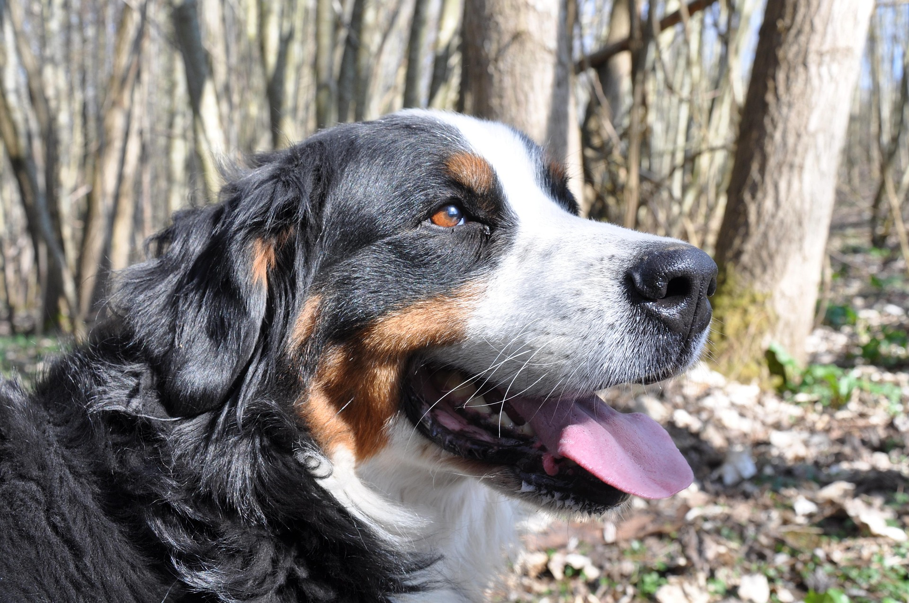

A kutyavilág elképesztően sokszínű, ahol minden fajta más-más egyéniséget rejt. A retrieverek és vizslák igazi családi motorok, akik végtelen szeretettel és állandó farokcsóválással töltik meg a házat, miközben folyamatosan lesik a gazdi minden kívánságát. Velük szemben a pásztor- és munkakutyák, mint a border collie vagy a német juhász, szinte emberi intelligenciával bírnak; nekik nemcsak fizikai mozgásra, hanem komoly agymunkára és feladatokra van szükségük ahhoz, hogy kiegyensúlyozottak maradjanak.

A dalmaták teljesen fehéren, pöttyök nélkül születnek, és jellegzetes fekete vagy barna foltjaik csak nagyjából háromhetes koruk után kezdenek el megjelenni a bundájukon
Tudj meg többet| Fajta | Méret | Származási ország |
|---|---|---|
| Németjuhász | Nagytestű (22-40 kg) | Németország |
| Labrador retriver | Közepes / Nagytestű (25-36 kg) | Kanada (Új Fundland) |
| Csivava | Kistetű (1-3 kg ) | Mexikó |